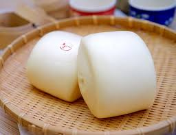

班級:餐三乙 姓名:廖子婷 學號:91034129
料理陳列展示
饅頭食譜
材料：
- 中筋麵粉：500克
- 砂糖：80克
- 鹽：1/4茶匙
- 快速發酵粉：1包（約7克）
- 水：約250毫升
- 食用油：適量
步驟：
- 將中筋麵粉、砂糖、鹽和快速發酵粉混合在一個大碗中。
- 慢慢加入水，同時用手或木湯匙攪拌，直到形成粘稠的麵糰。
- 將麵糰放在臺面上，搓揉約10分鐘，直到變得光滑且有彈性。
- 將搓好的麵糰放回碗中，用濕布蓋住，讓其發酵約1-2小時，直到體積變大。
- 發酵後的麵糰取出，再次揉搓幾分鐘，分成小團。
- 每個小團搓成饅頭形狀，放在蒸籠中，每個饅頭之間要有足夠的空隙。
- 用沸水蒸饅頭，約15-20分鐘，或直到饅頭蓬鬆熟透。
- 蒸好的饅頭取出，刷上一層食用油，讓其更加光滑。
- 饅頭完成，可根據個人口味添加內餡或搭配喜好的配料。

饅頭典故
饅頭是一種源遠流長的中國傳統食品，有著濃厚的文化典故。
象徵和諧
饅頭因其圓形，象徵著圓滿和和諧。在中國文化中，饅頭常被視為團圓和家庭幸福的象徵，因此在一些重要節慶和儀式中，饅頭經常成為不可或缺的食品。
傳統製作
製作饅頭的過程需要耐心和技巧，通常包括發酵、搓揉和蒸煮等步驟。這種傳統的製作方式反映了中國古老的烹飪技藝，並在歷史上一直延續至今。
文學意義
在一些文學作品中，饅頭也常常被提及。例如，明代文學家杨慎的《临江仙·滚滚长江东逝水》中就有“青梅如豆草如丝，你共我白首饅頭”的詩句，表達了生死與共的情感。